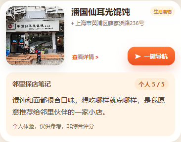
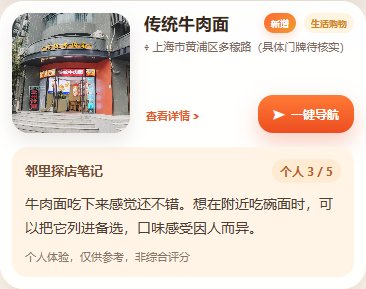

点位调整与邻里点评 · 本地审核稿
2026年10月13日｜仅本地修改，未提交、未推送、未上线。
已按你选择的“轻量短评条”接入8个现有点位，打开点位即可看到；中泰证券照片已根据你的确认补齐，坐标保持不变。此版本仍待上线审核。
已按你选择的“轻量短评条”接入8个现有点位，打开点位即可看到；中泰证券照片已根据你的确认补齐，坐标保持不变。此版本仍待上线审核。
本地实页效果
下方为真实网页点位介绍截图。沿用奶油色背景、圆角短评条及暖橙色个人评分标签；无需点击“查看详情”即可阅读，不增加扫码或操作步骤。




本次点位调整
新增5个点位、恢复过水鱼馆、停用好厨子小碗菜。新增坐标使用你提供的高德坐标，不以照片定位替换。当前共57个启用点位，其中54个有照片。
| 操作 | 点位名称 | 高德经纬度 | 照片 | 核对说明 |
|---|---|---|---|---|
| 新增点位并补图 | 传统牛肉面 | 121.50125, 31.21243 | 查看照片 | 照片未见可读的本店门牌，具体门牌待核实。 |
| 新增点位并补图 | 瓜牛便利店 | 121.50622, 31.212472 | 查看照片 | 招牌与位置对应已核对 |
| 新增点位并补图 | 上海黄浦区牛肉面羊肉汤（阳光里店） | 121.50049, 31.212606 | 查看照片 | 未能在照片及细部检查中读到羊肉汤或完整店名，也没有可读门牌；名称采用用户提供值，说明仅称门面实景，区域地址保守写阳光里。 |
| 新增点位并补图 | 烧腊卤味饭堂 | 121.500786, 31.212633 | 查看照片 | 原JPG GPS距用户点位约50.9米，且与过水鱼馆源图的GPS相同，照片GPS只作辅助；点位坐标严格采用用户值。 |
| 新增点位并补图 | 中泰证券 | 121.504206, 31.2122 | 查看照片 | 用户明确确认照片就是该点位，可以使用。 照片门牌不可读，具体门牌仍待核实，不根据照片GPS推算地址。 |
| 恢复点位并补图 | 过水鱼馆 | 121.501158, 31.212449 | 查看照片 | 招牌与位置对应已核对 |
| 注释停用 | 好厨子小碗菜 | 保留原数据为注释 | 不绑定照片 | 按用户本次要求停用好厨子小碗菜，保留原数据为行注释。 |


中泰证券源图GPS偏差约468.5米，保留为历史核验信息；照片身份已由你明确确认，本次采用照片但不改指定坐标。照片仅缩放压缩，源图未更改。
9条邻里点评文案与接入状态
评分原样保留，每条文案30—50字；“超杰沪味面坊”只记录待开业状态，不虚构食评或评分。
统一标注：个人体验，仅供参考，非综合评分。下列字数不含标点。
| 店铺 | 个人评分／状态 | 文案审核稿 | 字数 | 接入状态 |
|---|---|---|---|---|
| 潘国仙耳光馄饨 | 5 / 5 | 馄饨和面都很合口味，想吃哪样就点哪样，是我愿意推荐给邻里伙伴的一家小店。 | 33字 | 已本地接入 |
| 传统牛肉面 | 3 / 5 | 牛肉面吃下来感觉还不错。想在附近吃碗面时，可以把它列进备选，口味感受因人而异。 | 35字 | 已本地接入 |
| 阿力烧烤 | 4 / 5 | 下午才开门，牛肉串吃着不错。店里没有桌子，需要站着吃，出发前记得考虑这一点。 | 33字 | 已本地接入 |
| 老城厢汤包 | 4 / 5 | 汤包的味道很合我的口味，是这家让我惦记的一口。想吃汤包时，邻居们可以留意。 | 33字 | 已本地接入 |
| 小老板海鲜酒家 | 4 / 5 | 一家感觉不错的海鲜饭店。想在附近吃海鲜时，不妨把它列入备选，具体口味还要看个人喜好。 | 38字 | 已本地接入 |
| 超杰沪味面坊 | 待开业 · 未评分 | 目前标记为待开业，暂不提供食评或评分。等正式营业后，再补上实际探店感受。 | 32字 | 保留待补点位 |
| 潮汕一牛 | 5 / 5 | 既有火锅，也有猪脚饭；我更想推荐的是猪脚饭，吃着挺不错，附近想换换口味时可以留意。 | 36字 | 已本地接入 |
| 烧腊卤味饭堂 | 3 / 5 | 这次吃下来的感觉比较一般，整体没有特别打动我。口味各有偏好，选店时可以参考这份感受。 | 38字 | 已本地接入 |
| T-ONE咖啡 | 5 / 5 | 很想分享给邻里的宝藏小店，咖啡喝着很合口味。想在附近找杯咖啡时，这家值得放进备选清单。 | 39字 | 已本地接入 |
超杰沪味面坊暂无对应启用点位，本次不另行猜测位置或创建该店点位。没有点评的点位不显示空白短评条。
样式与验证记录
单独维护轻量短评条样式，首页及其他卡片不受影响；两份首页均已接入。原有照片放大、详情折叠和一键导航保留。